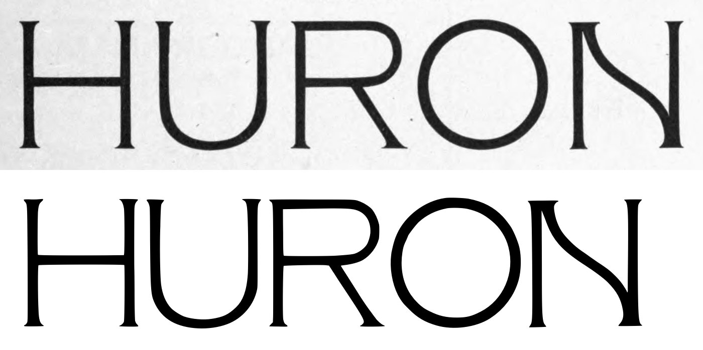
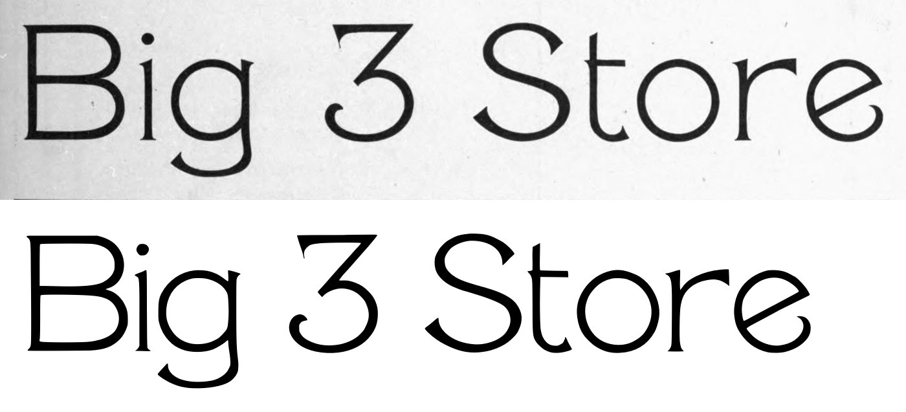
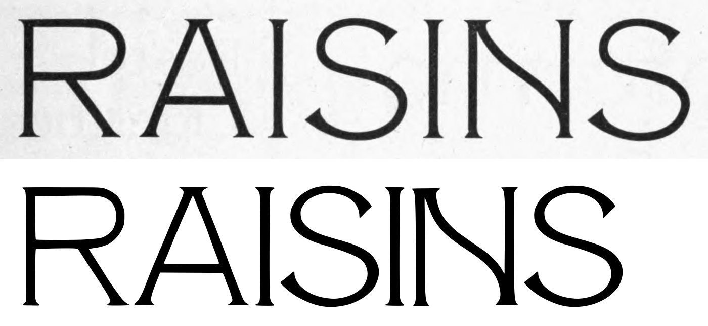
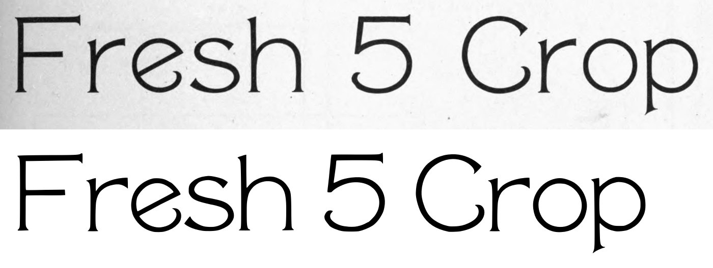
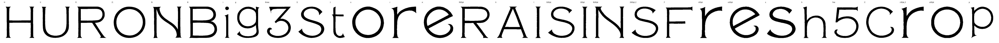

Gray letters are constructed, not traced.


1 warnings, 2 notes.
[
{
"level": "warn",
"check": "trace_iou",
"glyph": "i",
"value": 0.922,
"note": "potrace trace overlaps the scan by less than 93% (cap 291 px)"
},
{
"level": "info",
"check": "specks",
"glyph": "s",
"value": 1,
"note": "marks beside the letter were recorded, not cut"
},
{
"level": "info",
"check": "specks",
"glyph": "h",
"value": 1,
"note": "marks beside the letter were recorded, not cut"
}
]
{
"391:72pt": {
"n_caps": 7,
"cap_height_px": 291,
"cap_source": "caps",
"baseline_px": 1862,
"baselines": {
"5": 1862,
"6": 2265.0
},
"glyphs": [
"H",
"U",
"R",
"O",
"N",
"B",
"i",
"g",
"three",
"S",
"t",
"o",
"r",
"e"
],
"x_height_px": 237.5,
"figure_height_px": 295,
"stem_px": 22,
"scale": 2.4055,
"stem_units": 52.9,
"x_height": 571,
"figure_height": 710
},
"391:60pt": {
"n_caps": 9,
"cap_height_px": 241,
"cap_source": "caps",
"baseline_px": 975,
"baselines": {
"3": 975,
"4": 1309.0
},
"glyphs": [
"R.60pt",
"A",
"I",
"S.60pt",
"I.60pt",
"N.60pt",
"S.60pt_2",
"F",
"r.60pt",
"e.60pt",
"s",
"h",
"five",
"C",
"r.60pt_2",
"o.60pt",
"p"
],
"x_height_px": 173,
"figure_height_px": 251,
"stem_px": 18,
"scale": 2.90456,
"stem_units": 52.3,
"x_height": 502,
"figure_height": 729
}
}
{
"archive_id": "bookoftypespecim00barnrich",
"title": "Book of type specimens. Comprising a large variety of superior copper-mixed types, rules, borders, galleys, printing presses, electric-welded chases, paper and card cutters, wood goods, book binding machinery etc., together with valuable information to the craft. Specimen book no.9",
"creator": [
"Barnhart, bros. & Spindler, firm, type founders, Chicago",
"De Young family",
"De Young, Charles, 1881-"
],
"publisher": "Chicago, Barnhart bros. & Spindler",
"date": "[1907]",
"ppi": 400,
"url": "https://archive.org/details/bookoftypespecim00barnrich",
"copyright_status": "NOT_IN_COPYRIGHT",
"contributor": "University of California Libraries",
"leaves": [
391
]
}